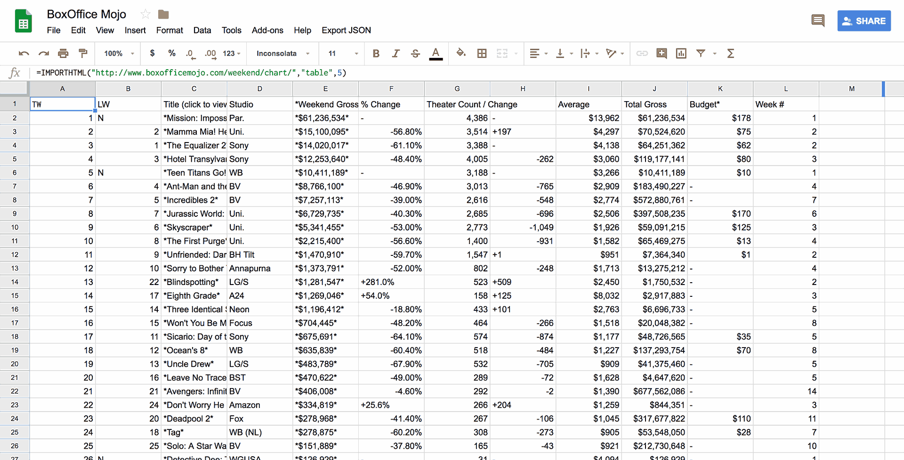

TARGET DATA-DRIVEN PROTOTYPE
Technology constantly changes our day to day lives at a rapid pace. As artists, technology changes not only the medium in which we create art but also the way we think about art.
From using animal fat and dirt in Paleolithic cave paintings to Impressionist painters using paint in portable tubes to the creation of printmaking to mass distribute art, the technology we have available directly affects art. Today, our human existence is marketed by data. Data is a form of technology that gives us the greatest tool we have today, knowledge. We know more about the world around us and the people in it, than ever before.
Data is produced live every second, or in some cases, even faster. Although we can’t ignore pure human creativity, data is one of the key elements to help creativity and drives humanity to discover more about life. With so much data at our fingertips, we as designers and animators have endless possibilities to create with it.
There is an ever evolving and growing amount of technology in this field helping animators and designers to capture and use data in real time. MoCap, 3D Scanners, and robotic cranes are just a few examples that most animators are familiar with. Websites, such as NASA, Weather.com, Box Office Mojo, etc. are supplying and parsing live data each and every second to allow their users to collect the data through their APIs.

At max/lab, where our designers pursue new ideas and technologies, we are taking on the challenge of creating an animation entirely built around data. To create a visual representation of box office rankings, we pulled data from the Box Office Mojo API and converted it to an After Effects compatible format to drive the animation.
Our team of animators, designers, and developers had to work in parallel paths to find solutions for every perplexity they encountered in the process. After some long days and what seemed like endless testing, the result is a tool that can be tailored to help any brand and client. This prototype is not only an impressive piece of motion design, but it is a piece of art representing real data in near real time.
Reza Alavi
